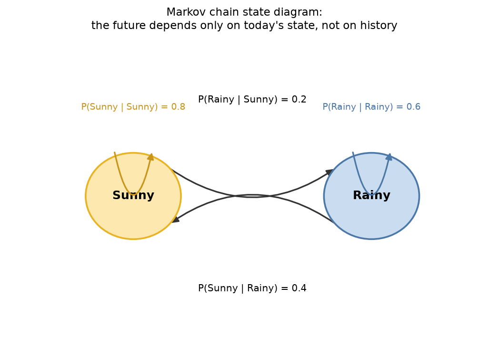
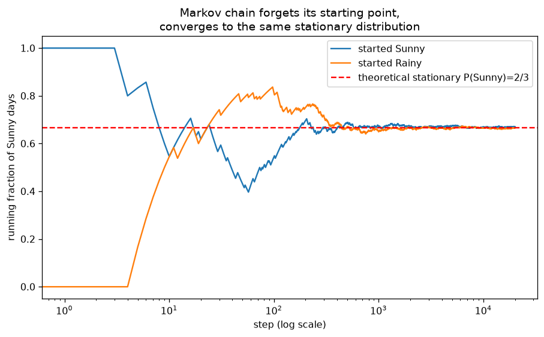
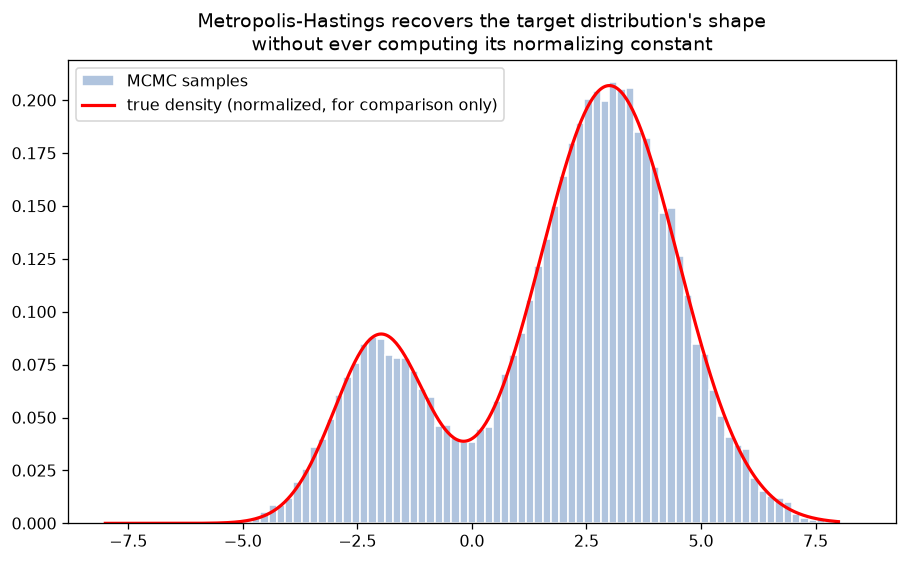

Chapter 24: Markov Chains and Monte Carlo Methods
The idea this chapter builds toward
This chapter covers two related tools that recur constantly in modern statistics and AI: Markov chains (a simple, powerful way to model systems that evolve randomly over time, where the future depends only on the present state, not the full history) and Monte Carlo methods (using repeated random simulation to approximate quantities too hard to compute exactly). Combined, they form MCMC (Markov Chain Monte Carlo) - the computational technique that, as promised in Chapter 17, finally made Bayesian statistics practical for complex, real-world, many-parameter models.
Intuition, in one breath: A Markov chain says "where you go next depends only on where you are now, not on how you got here," and Monte Carlo says "if you can't compute it exactly, simulate it a lot and average." MCMC is these two ideas married: build a random walk that wanders in proportion to how probable each place should be, then just record where it went.
Markov chains - "the future depends only on the present"
A Markov chain describes a system that moves between a set of states, where the probability of moving to any next state depends only on the current state - not on the sequence of states that led there. This is called the Markov property (memorylessness, a cousin of the Exponential distribution's memoryless property from Chapter 6, but applied to discrete state sequences rather than continuous waiting times).
Worked example - a simple weather model
Suppose weather is either "Sunny" or "Rainy," and tomorrow's weather depends only on today's: if today is Sunny, there's an 80% chance tomorrow is also Sunny (20% Rainy); if today is Rainy, there's a 60% chance tomorrow is also Rainy (40% Sunny). This is fully captured by a transition matrix:
$$T = \begin{bmatrix}0.8 & 0.2\\0.4 & 0.6\end{bmatrix} \quad \text{(rows: from state, columns: to state; Sunny, Rainy)}$$

Every Markov chain can be drawn this way: one circle per state, one arrow per possible transition, labeled with its probability. Notice every state's outgoing arrows (including its self-loop) sum to exactly 1 - you have to go somewhere, possibly back to where you started. This picture contains the entire model; nothing about the chain's future behavior depends on anything not drawn here.
A genuinely useful question: if you run this process for a very long time, what fraction of days end up Sunny vs. Rainy overall, regardless of where you started? This long-run distribution is called the stationary distribution - a probability distribution over states that, once reached, the chain stays in forever (applying the transition matrix to it reproduces the exact same distribution). For this example, solving $\pi T = \pi$ (finding the stationary distribution, a close mathematical cousin of the eigenvector equation from Chapter 19 - the stationary distribution is literally the eigenvector of $T^T$ with eigenvalue 1) gives a long-run Sunny probability of $\frac{0.4}{0.2+0.4} = \frac{2}{3}$, regardless of whether you started on a Sunny or Rainy day - a genuinely useful and non-obvious fact: the chain "forgets" its starting point over time and settles into one fixed long-run behavior, a property that turns out to be the entire key to why MCMC works, below.
Monte Carlo methods - approximating hard quantities by repeated random simulation
You've actually already used Monte Carlo methods throughout this book without the formal name attached: every time you've simulated an experiment thousands of times in the companion code (Chapter 3's Monty Hall simulation, Chapter 9's estimator comparisons, Chapter 18's bootstrap and permutation tests) to approximate some probability or statistic you couldn't easily compute by exact formula, that was a Monte Carlo method: using repeated random sampling to numerically approximate a quantity that's hard or impossible to compute exactly in closed form.
The backstory - nuclear weapons research and a card game
The name and modern formalization trace to Stanislaw Ulam and John von Neumann, working at Los Alamos National Laboratory in the late 1940s on nuclear weapon design, specifically needing to estimate how neutrons would scatter and multiply through fissile material - a problem with no clean closed-form solution, but one that could be approximated by simulating many random neutron paths and averaging the outcomes. Ulam reportedly got the core idea while recovering from an illness and playing solitaire, wondering about the probability of winning a given hand - realizing that rather than working out the combinatorics exactly (extremely hard for solitaire), he could simply play out many random simulated games and count how often he won. The method needed a public, unclassified code-name for the then-secret weapons project, and a colleague, Nicholas Metropolis, suggested "Monte Carlo" - a reference to the famous Monaco casino, where Ulam's uncle reportedly gambled, a fittingly playful name for a method fundamentally about exploiting randomness to get useful answers.
MCMC - combining both ideas to sample from distributions you can't directly compute
Here's the exact problem MCMC solves, directly connecting back to Chapter 17: Bayesian posterior distributions, $P(\theta\mid\text{data}) \propto P(\text{data}\mid\theta)P(\theta)$, are usually only known up to their normalizing constant - you can compute the relative height of the posterior at any given $\theta$ (just multiply likelihood by prior), but computing the exact normalizing constant $P(\text{data})$ (Chapter 4's "evidence" term) requires integrating over every possible $\theta$ value, which is intractable for complex, many-parameter models. MCMC's trick: construct a specially-designed Markov chain whose stationary distribution is exactly the posterior distribution you want, even though you never needed to know its normalizing constant to build that chain. Then, you simply run the chain for a long time and record the sequence of states it visits - because of the stationary-distribution property demonstrated in the weather example above, the chain will visit different $\theta$ values in proportion to their true posterior probability, even though you never explicitly computed that probability's exact formula. Collect enough samples from running the chain, and you have an empirical approximation of the entire posterior distribution, ready for histogramming, computing credible intervals (Chapter 17), or any other downstream use - all without ever touching the intractable normalizing integral directly.
The Metropolis-Hastings algorithm, sketched
The classic recipe for constructing such a chain (named for the same Metropolis who suggested "Monte Carlo," plus Hastings' later 1970 generalization): at each step, propose a random small move from your current $\theta$ to a nearby candidate $\theta'$; compute the ratio of the (unnormalized) posterior at $\theta'$ versus at $\theta$ - crucially, this ratio's normalizing constants cancel out exactly, since they're the same constant at both points, which is precisely why you never need to know that constant; if the candidate $\theta'$ has higher (unnormalized) posterior probability, always accept the move; if lower, accept it anyway but only with a probability equal to that ratio (this crucial willingness to sometimes accept a "worse" move, rather than only ever climbing uphill, is exactly what prevents the chain from getting permanently stuck at a single peak and lets it properly explore the full shape of the posterior, including other nearby peaks). Over many iterations, this simple accept/reject rule provably constructs a chain whose stationary distribution is exactly your target posterior.
Why this matters for AI directly
Modern Bayesian deep learning, probabilistic programming languages (like Stan, PyMC, or NumPyro), and Bayesian hyperparameter optimization all lean on MCMC or its faster modern approximations (variational inference, briefly mentioned in Chapter 17, trades some accuracy for dramatically more speed by turning the sampling problem into an optimization problem instead). More broadly, Hidden Markov Models - Markov chains where the true state is latent/unobserved (directly extending Chapter 23's latent-variable theme, with EM-style algorithms used to fit them) - underlie classical approaches to speech recognition, genetic sequence analysis, and part-of-speech tagging in early natural language processing, making this chapter's Markov chain vocabulary a genuine prerequisite for understanding how NLP was done before the deep-learning-dominated era that followed.
Figures

The Sunny/Rainy Markov chain started from two different initial states, both converging to the same long-run stationary distribution (P(Sunny)=2/3) -- the chain 'forgets' where it started.

Samples drawn by a from-scratch Metropolis-Hastings sampler, histogrammed against the true target density -- recovered without ever computing the distribution's normalizing constant.
Run it yourself
book/code/ch24_markov_chains_monte_carlo.py simulates the weather Markov chain example directly (confirming the $\frac{2}{3}$/$\frac{1}{3}$ stationary distribution empirically by running the chain for thousands of steps from different starting points and watching them converge to the same long-run proportions), then implements a from-scratch Metropolis-Hastings sampler to draw samples from a target posterior distribution known only up to its normalizing constant, and compares the resulting histogram of samples against the distribution's true (separately, exactly computable in this toy example) shape to confirm the sampler recovered it correctly.
python book/code/ch24_markov_chains_monte_carlo.py
Why This Matters - In AI and In Everyday Life
In AI / machine learning:
- Google's original PageRank algorithm: modeling a web surfer randomly clicking links as a Markov chain, and finding its stationary distribution, is literally how PageRank ranked the early web.
- Reinforcement learning's entire mathematical foundation: a Markov Decision Process (the formal object behind RL) is this chapter's Markov chain plus actions and rewards -- there is no modern RL theory without this chapter.
- Diffusion models' reverse sampling process: generating an image with a diffusion model is literally a (deterministic or stochastic) Markov chain run backward, stepping from pure noise through a long sequence of latent states to a clean image, and the noise-injection-and-denoise iteration is a direct relative of this chapter's transition dynamics.
- Temperature/sampling in LLM token generation: autoregressive text generation samples each next token conditioned only on the current context, which is a Markov-style process over token sequences; nucleus/top-k sampling are Monte Carlo draws from that conditional distribution, and MCMC-based decoding methods use the accept/reject logic from this chapter to enforce constraints.
In everyday, non-AI life:
- Board games like Monopoly or snakes-and-ladders: your next position depends only on your current position and the dice roll, not on how you got there -- a textbook Markov chain playing out at the kitchen table.
- Queueing at a bank or call center: models of how many people are in line next, given only how many are in line now (not the full history), use exactly this chapter's Markov chain machinery for staffing decisions.
Worked example - by hand, larger
Consider a token-level toy model - a two-state Markov chain describing whether a document alternates between a "technical" mode and a "conversational" mode. Suppose the transition matrix is $$T = \begin{bmatrix}0.7 & 0.3\\0.2 & 0.8\end{bmatrix} \quad \text{(rows: current mode; columns: next mode; technical, conversational).}$$ If you're using a technical word, there's a 70% chance the next word is technical and 30% conversational; from conversational, 20% chance next is technical and 80% conversational. Let's find the long-run fraction of technical words.
Set up the stationary equations. We want row vector $\pi = (\pi_T, \pi_C)$ with $\pi T = \pi$ and $\pi_T + \pi_C = 1$. Writing out the first component: total probability of being technical next is $0.7\pi_T + 0.2\pi_C = \pi_T$. Rearranging: $0.2\pi_C = 0.3\pi_T$, so $\pi_C = 1.5\,\pi_T$. With $\pi_T + \pi_C = 1$: $\pi_T + 1.5\pi_T = 2.5\pi_T = 1$, giving $\pi_T = 0.4$ and $\pi_C = 0.6$. So in the long run 40% of tokens sit in technical mode, regardless of the starting mode.
Verify by one step. Start from $\pi_T=0.4$, $\pi_C=0.6$. Next technical probability: $0.7\times0.4 + 0.2\times0.6 = 0.28+0.12 = 0.40$. Next conversational: $0.3\times0.4+0.8\times0.6 = 0.12+0.48 = 0.60$. Unchanged - confirming the fixed point, exactly as $\pi T=\pi$ requires.
Now a Metropolis-Hastings step. Suppose you're sampling a parameter $\theta$ with unnormalized target $p(\theta) \propto e^{-\theta^2/2}$ (a standard Normal, only known up to that constant). You're at $\theta=1.0$; you propose $\theta' = 1.5$ from a symmetric random-walk proposal. The acceptance ratio is $$\frac{p(\theta')}{p(\theta)} = \frac{e^{-(1.5)^2/2}}{e^{-(1.0)^2/2}} = \frac{e^{-1.125}}{e^{-0.5}} = e^{-0.625} = 0.5353.$$ Since $0.5353 < 1$, you accept the move only with probability $0.5353$ - so about 46% of the time you reject and stay at $1.0$, even though you're moving toward the peak. This occasional refusal to climb is what keeps the chain exploring the full distribution's shape rather than sliding deterministically to $\theta=0$.
The takeaway: the stationary distribution is found by solving a simple linear balance of "probability in vs. probability out" for each state, and Metropolis-Hastings builds samples from it using only ratios of the target - never its impossible-to-compute normalizing constant.
Check your understanding
- Explain, in your own words, why the weather chain's long-run behavior stops depending on whether you started on a Sunny or Rainy day.
- Why does Metropolis-Hastings's accept/reject ratio let you avoid ever computing the posterior's normalizing constant?
- Why is "sometimes accept a worse candidate" a necessary feature of the algorithm, rather than a bug to be removed?
Exercises
Exercise 1 - Stationary distribution by hand
A 2-state Markov chain has transition matrix $T = \begin{bmatrix}0.9 & 0.1\\0.5 & 0.5\end{bmatrix}$ (rows: from, columns: to). Find the stationary distribution.
Show solution
Solve $\pi T = \pi$ with $\pi = (\pi_1,\pi_2)$ and $\pi_1+\pi_2=1$. First component: next-state-1 probability $0.9\pi_1 + 0.5\pi_2 = \pi_1$. Rearrange: $0.5\pi_2 = 0.1\pi_1$, so $\pi_1 = 5\pi_2$. Then $5\pi_2 + \pi_2 = 1$ gives $\pi_2 = 1/6 \approx 0.1667$ and $\pi_1 = 5/6 \approx 0.8333$. Check: $0.9\times0.8333 + 0.5\times0.1667 = 0.7500+0.0833 = 0.8333$. ✓. State 1 is "sticky" (self-transition 0.9), so it dominates the long-run occupancy.Exercise 2 - A Monte Carlo estimate
You want to estimate $\pi \approx 3.14159$ without using the constant. Describe a Monte Carlo procedure and compute its expected error behavior as the number of samples grows.
Show solution
Throw $n$ uniform random points into the unit square $[0,1]\times[0,1]$ and count how many fall inside the quarter-circle $x^2+y^2\le1$. That count $k$ is Binomial$(n,p)$ with $p = \frac{\text{area of quarter circle}}{\text{area of square}} = \frac{\pi/4}{1} = \pi/4$. So estimate $\hat\pi = 4k/n$. Its standard error: $\text{SE}(\hat\pi) = 4\sqrt{p(1-p)/n} = 4\sqrt{(\pi/4)(1-\pi/4)/n}$. With $\pi/4\approx0.7854$: $4\sqrt{0.7854\times0.2146/n} = 4\sqrt{0.1685/n} = 4\times0.4105/\sqrt{n} = 1.642/\sqrt{n}$. To get an error of 0.01 you need $\sqrt{n} \ge 164.2$, i.e. $n \approx 27{,}000$ points; to gain one more digit (error 0.001) you need ~100x more, $n\approx2.7$ million. This is the universal $1/\sqrt n$ Monte Carlo convergence rate - get a decimal of accuracy, pay 100x the samples.Exercise 3 - Why MCMC needs the accept/reject step
Explain why a sampler that always accepted moves in the uphill direction only (pure gradient ascent on the unnormalized density) would fail to produce samples from the target distribution, using this chapter's weather/intuition and the concept of the stationary distribution.
Show solution
Pure uphill ascent is deterministic: from any start it climbs to the nearest local maximum and stays. The sequence of visited points then has all its mass at a few peaks and *zero* mass in the low-density valleys between them. Sampling from that sequence would badly misrepresent the target density, whose true mass is spread across the whole distribution, including the low-probability regions. Metropolis-Hastings adds controlled downhill moves precisely so the chain's stationary distribution - the distribution it settles into over long runs - is exactly the target. The acceptance probability (the ratio for downhill, always accept for uphill) is calibrated so that the probability flux between any two regions balances in the long run, which is the defining condition of stationarity. Remove the occasional "worse" accept and the balance breaks, the stationary distribution changes, and the samples are no longer from the distribution you wanted.What's next
Chapter 25 is the capstone synthesis chapter: it walks through where every single piece of probability and statistics you've learned across this entire book - MLE, cross-entropy, the Normal distribution, the bias-variance tradeoff, Bayesian priors, and more - shows up, by name and by mechanism, directly inside the design and training of neural networks.